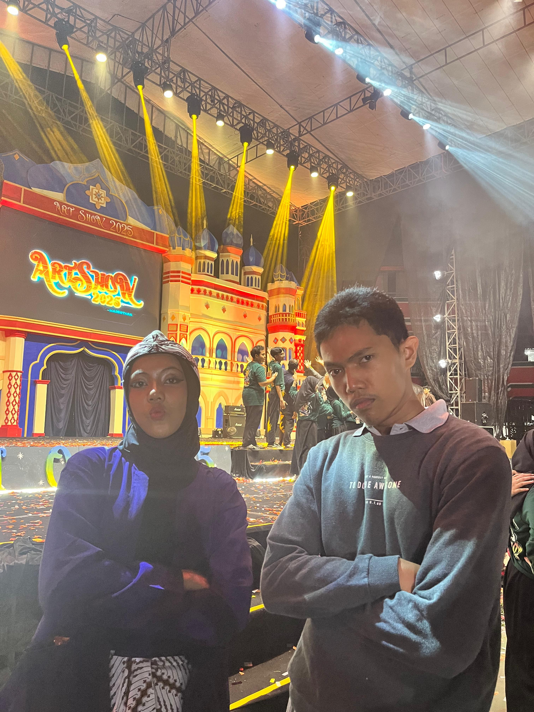
The First ACOW
perayaan untuk kerja keras kitaa berbulan-bulan


a story in five CHAPTERs
OUR ARCHIVE
scroll ↓It all started with something that seemed ordinary.
A conversation, a few laughs, and somehow… here we are.
kenalan?? bahkan kita langsung ngobrol tanpa perlu kenalan yang gimana gimana banget
dari cuma nanya tugas, lama-lama jadi nanyain kabar
awalnya, aku kira pertemuan kita biasa aja, tapi entah kenapa rasanya ada yang spesial dari kamu
sejak, dialog pertama yang aku ucapin buat kamu
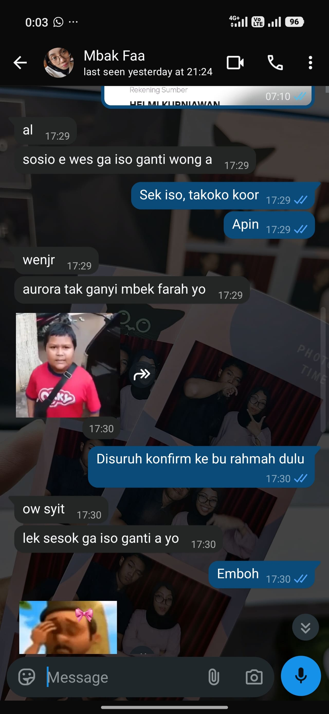
chat pertama kita
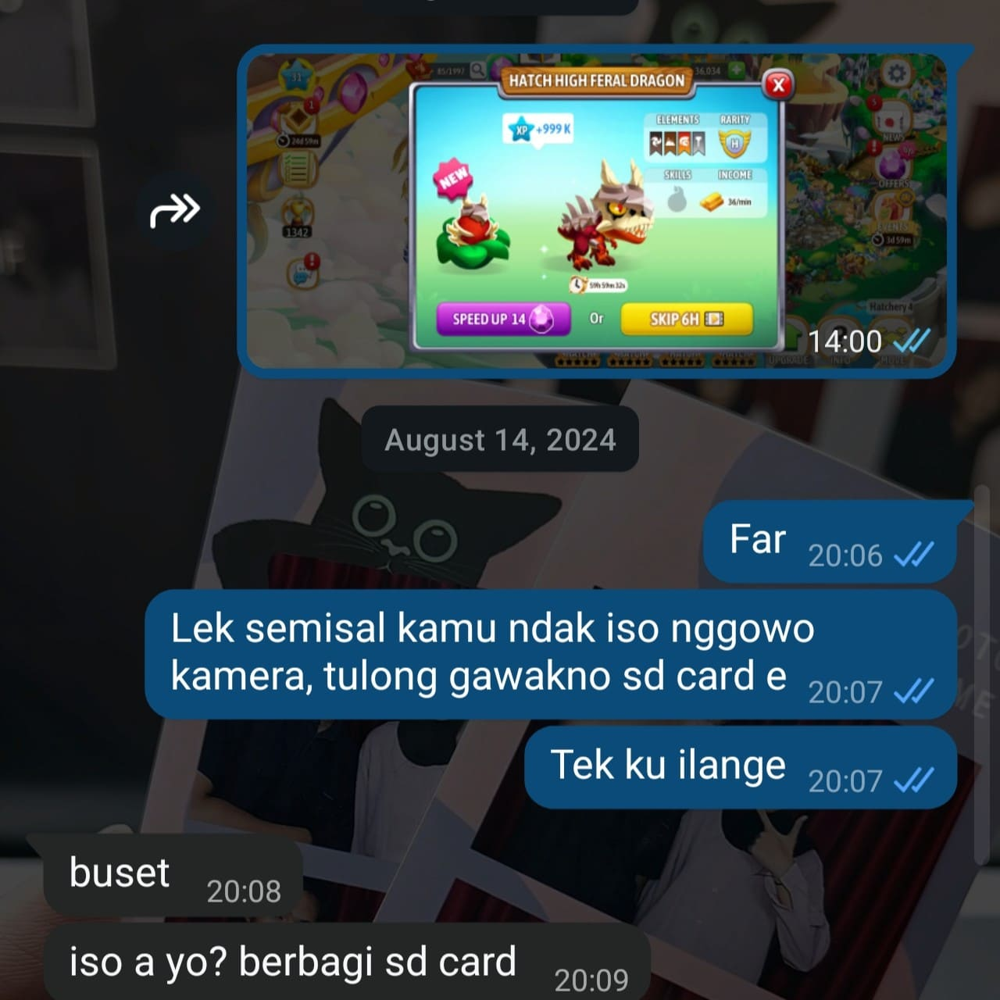
naga langka yang aku bangga banggain ke kamu
duluu kita chattan suka bahas hal-hal random, dari tugas, naga baru di dragon city, pokoknya hal random bin ga penting
habis ituu, pas kita pertama kali ngobrol panjaaaang di bangku depan kelas X, bener bener buat hati aku yakin sama kamu
I realized I really enjoyed having you around.
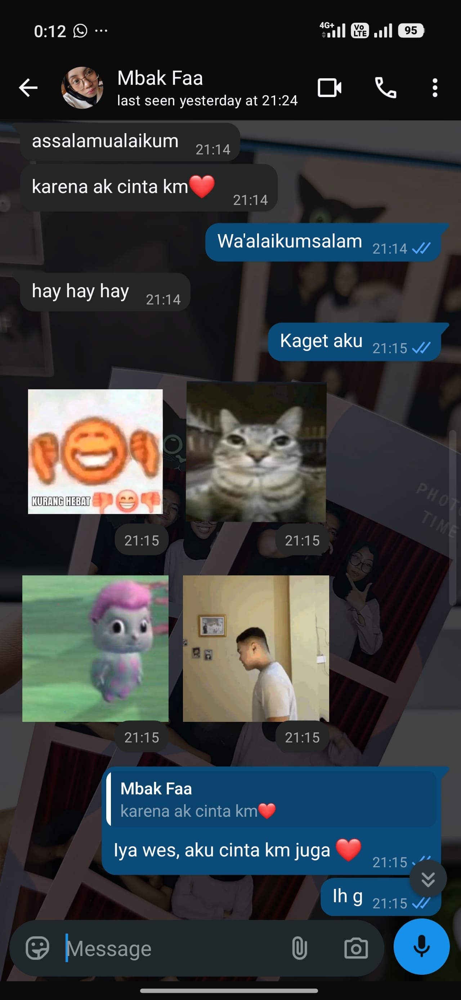
bukan momen besar. justru kejadian kecil yang cuma kita berdua yang ngerti.
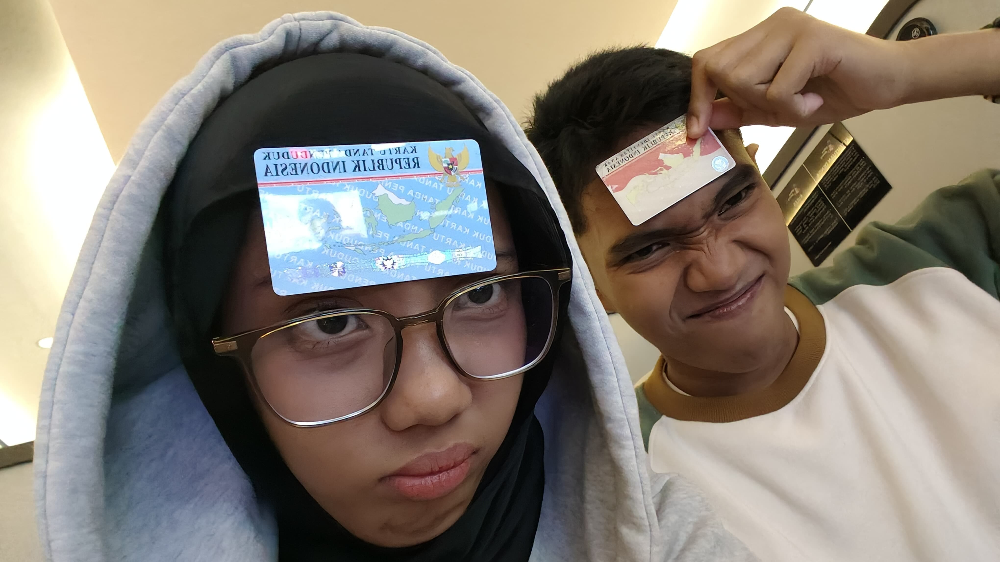
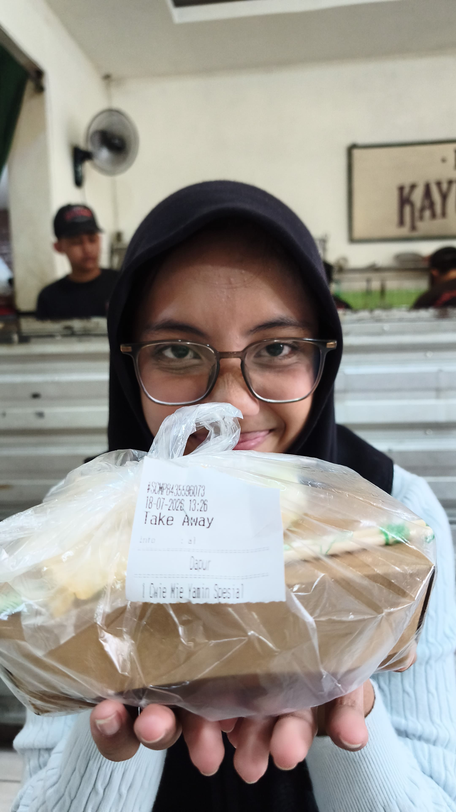
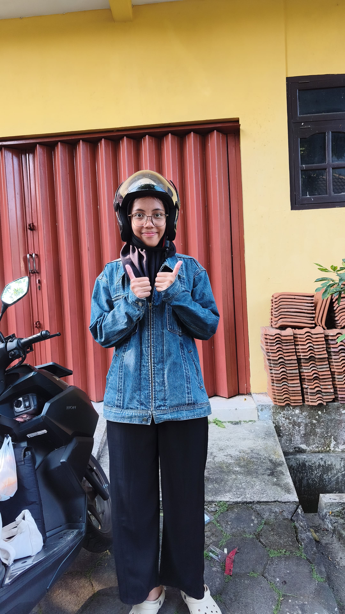
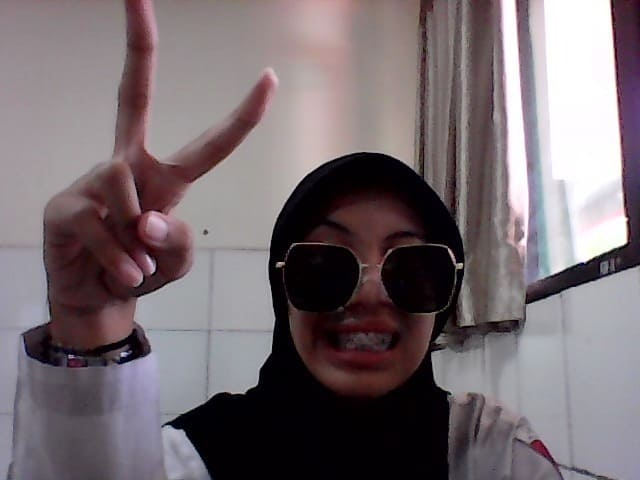
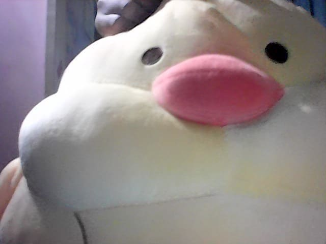

perayaan untuk kerja keras kitaa berbulan-bulan
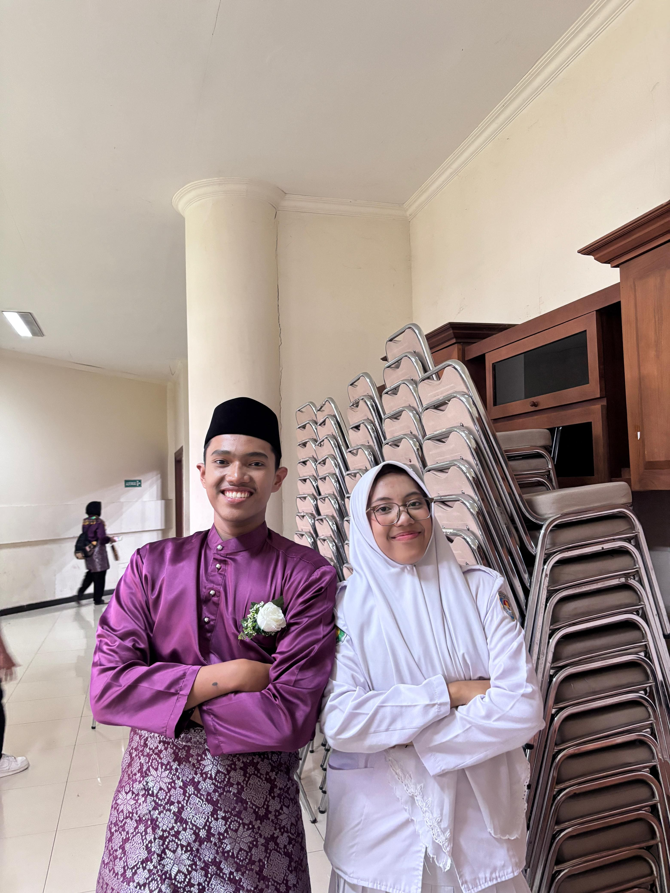
satu event.. cuma ga satu bagiaan..
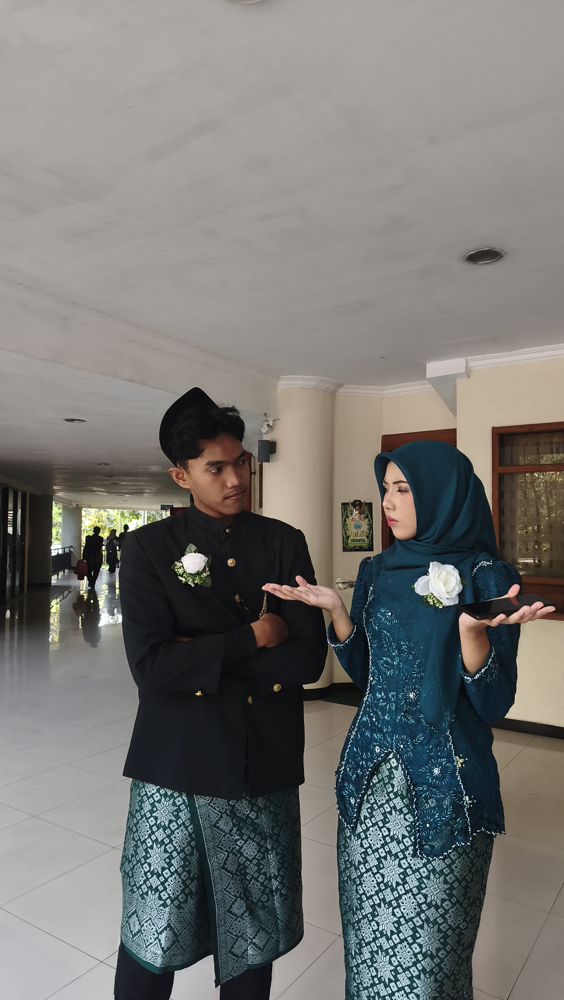
meskipun ga jadi pasangaan, yang penting kita satu tugaas
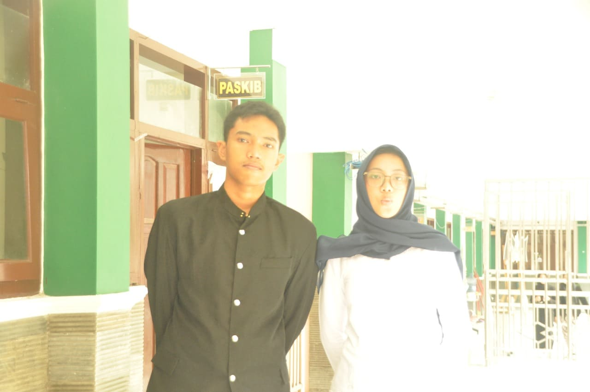
sumpil terang banget kayak masa depan kita.. hehe
setelah semuaa curhatan dan ceritaa kita hari itu, kalimat "i love you" dari kamu bener-bener terngian-ngiang
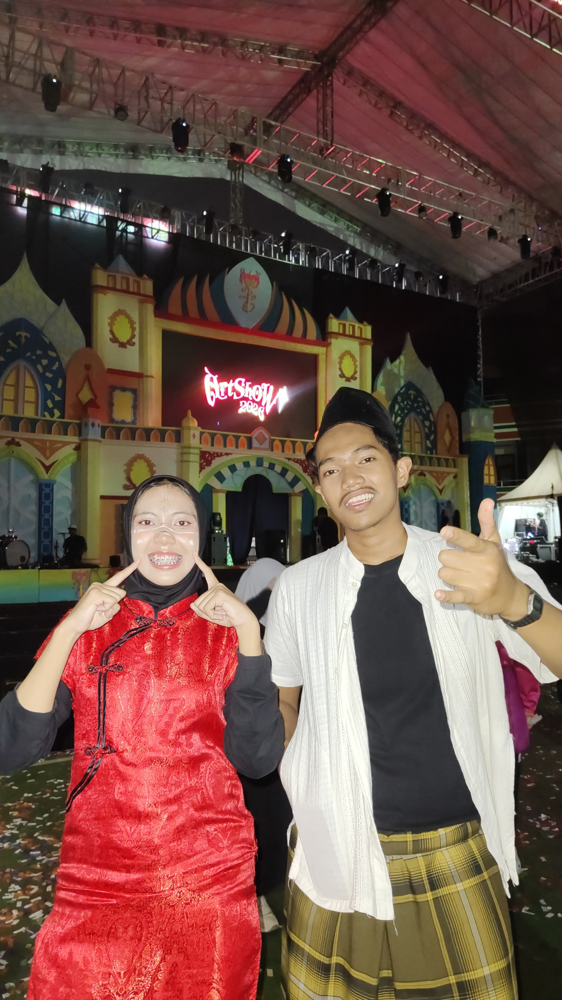
yieey acow terakhir kitaa tapi bukan berarti akhir dari cerita indah kita
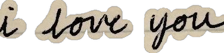
Somewhere along the way,
you stopped being just someone I knew.
You became someone I looked for.
Someone I wanted to tell things to.
Someone whose presence made ordinary days
feel a little different.
Two people who were still figuring each other out.
Two people who have collected countless little memories together.
kalu diliat-liat banyak ya yang berubah, mulai dari diri kita masing-masing sampai cara kita ngetreat satu sama lain
tiap kabar yang kita tuker, tiap rasa yang kita bagi, dan tiap momen yang kita ceritain semua hal-hal yang mungkin remeh, tapi berharga banget buat aku
aku bersyukur kita bisa ngelewatin jalan yang panjang dan ga mudah. ada jatuh bangun dan jatuh cinta lagi di setiap waktu yang buat kita makin kuat ngejalanin hubungan ini
And somehow, I still want to know
what happens next.